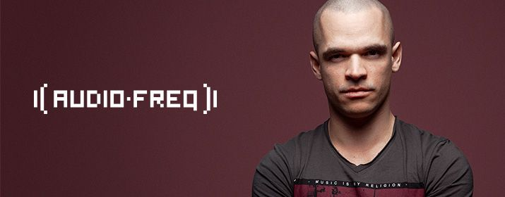

Mainstage: 22:00-23:00!
Audiofreq, besser bekannt als Bioweapon oder Sam Gonzalez, ist ein australischer
Hardstyle-DJ. Seine Musik wird von den Großen der Hardstyle-Szene supported, wie
Headhunterz, Noisecontrollers, The Prophet, D-Block & S-Te-Fan, Ran-D, Technoboy
und Kutski.
Sam Gonzalez und Corey Soljan waren als Duo bekannt als Bioweapon, jedoch
trennten sie sich bei der Produktion ihres ersten Albums, dessen Tracks nun über
ihre Social Media Seiten veröffentlicht werden. Während Corey als Code Black
performt, produziert und performt Sam weiter als Audiofreq.